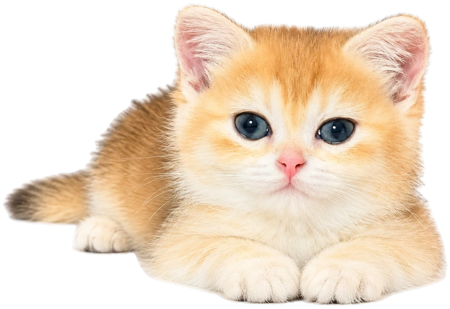

六一2 小时前
今天阳光很好，在飘窗上睡了一整个下午，连饭都不想起来吃。
原型 · 六一体重 · v1
管理端录入，用户端只读。入口放在六一页资料卡下面——一条「体重 8.4 斤」，点开后是底部弹窗，里面两个 tab：曲线和列表。曲线默认看近 3 个月，可以切近 1 个月或全部；列表按月份倒序，每条带相对上一条的增减。后台没有记录时，这条入口整个不显示。管理端在「系统 → 六一」新增「体重」一段：看趋势、记一笔、改错和删除。
A · 用户端「六一」页入口资料卡下多一条体重，点开弹窗
睡在阳光里的小家伙
今天阳光很好，在飘窗上睡了一整个下午，连饭都不想起来吃。

体重是资料卡里的一行，不是独立模块，也不做成悬浮按钮；点整行打开弹窗。没有体重记录时整行不显示，资料卡只剩三项统计。
B · 体重弹窗 · 曲线默认近 3 个月；底部弹窗，两个 tab
睡在阳光里的小家伙
顶部数字是最新一条，「较上次」对比上一条记录，「近 30 天」对比 30 天前最近的一条。曲线上的点是每次记录，最后一个点加粗并标数值；用户端不显示是谁记的。
C · 体重弹窗 · 列表tab 切换；按月分组，倒序
睡在阳光里的小家伙
11 月 4 次
10 月 5 次
继续上滑查看 9 月及更早的 3 次
列表按日期倒序，月份分组；每条右侧箭头是相对上一条较早记录的变化（最早一条显示 —）。用户端没有编辑入口，也不显示记录人。
D · 管理端「系统 → 六一」新增「体重」一段：趋势 + 记一笔 + 明细
系统 · 六一
用户端只查看；体重也在这里记。
体重段放在基本信息之后、图片之前——这里是你每次进来最可能操作的地方。记录多时在段内滚动，不给整页加长。
E · 320 适配入口收成一行；弹窗满宽、曲线等比缩放
今天阳光很好，在飘窗上睡了一整个下午，连饭都不想起来吃。
320 下入口仍是一行，副标题隐藏、字号收小；点开后的弹窗满宽，曲线按容器等比缩放，不横向滚动。
F · 后台无数据用户端不显示体重入口
今天阳光很好，在飘窗上睡了一整个下午，连饭都不想起来吃。
一条体重都没有时，资料卡只有动态 / 生日 / 到家三项统计，不出现体重卡、0 斤或空入口；管理端记下第一条后，体重卡才出现。
G · 管理端桌面 1280左：资料与图片 ｜ 右：体重趋势与明细
系统 · 六一
用户端只查看；体重也在这里记。
1 单位：斤，1 位小数。
2 不画目标体重。
3 一天一条；实际一周左右记一次，不需要一天多次。
4 用户端不显示记录人。
5 后台没有数据时，用户端不展示体重入口。
6 颜色：上涨绿色、下降红色（猫不需要减肥）。
content/pet.json 的 weights[]：{ id, date, weight, createdAt }，weight 以斤为单位、1 位小数，按 date 升序保存；用户端页面本来就读这份文档。date 覆盖，不追加。